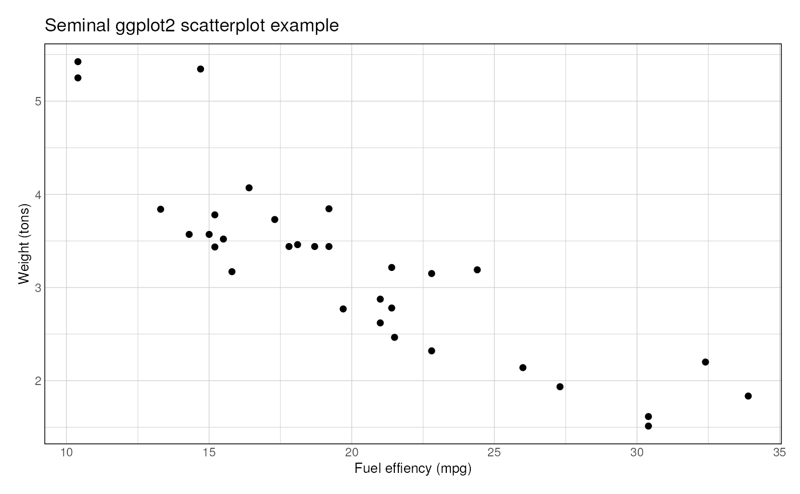

R/vplot-chroms.R
theme_ggplot2.RdPersonal ggplot2 theming function, adapted from roboto-condensed at https://github.com/hrbrmstr/hrbrthemes/
theme_ggplot2( grid = TRUE, border = TRUE, base_family = "", base_size = 8, plot_title_family = base_family, plot_title_size = 12, plot_title_face = "plain", plot_title_margin = 5, subtitle_size = 11, subtitle_face = "plain", subtitle_margin = 5, strip_text_family = base_family, strip_text_size = 10, strip_text_face = "bold", caption_size = 9, caption_face = "plain", caption_margin = 3, axis_text_size = base_size, axis_title_family = base_family, axis_title_size = 9, axis_title_face = "plain", axis_title_just = "rt", panel_spacing = grid::unit(2, "lines"), grid_col = "#cccccc", plot_margin = margin(12, 12, 12, 12), axis_col = "#cccccc", axis = FALSE, ticks = FALSE )
| grid | panel grid (`TRUE`, `FALSE`, or a combination of `X`, `x`, `Y`, `y`) |
|---|---|
| border | border if `TRUE` add border |
| base_family, base_size | base font family and size |
| plot_title_family, plot_title_face, | plot title family, face |
| plot_title_size, plot_title_margin, | plot title size and margin |
| subtitle_face, subtitle_size | plot subtitle family, face and size |
| subtitle_margin | plot subtitle margin bottom (single numeric value) |
| strip_text_family, strip_text_face, strip_text_size | facet label font family, face and size |
| caption_face, caption_size, caption_margin | plot caption family, face, size and margin |
| axis_text_size | font size of axis text |
| axis_title_family, axis_title_face, axis_title_size | axis title font family, face and size |
| axis_title_just | axis title font justificationk one of `[blmcrt]` |
| panel_spacing | panel spacing (use `unit()`) |
| grid_col | grid color |
| plot_margin | plot margin (specify with [ggplot2::margin]) |
| axis_col | axis color |
| axis | add x or y axes? `TRUE`, `FALSE`, "`xy`" |
| ticks | ticks if `TRUE` add ticks |
theme A ggplot theme
library(ggplot2) ggplot(mtcars, aes(mpg, wt)) + geom_point() + labs(x="Fuel effiency (mpg)", y="Weight (tons)", title="Seminal ggplot2 scatterplot example") + theme_ggplot2()